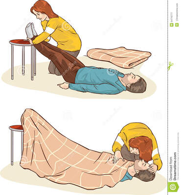

EMERGÊNCIAS
Queimaduras
O primeiro passo em caso de queimadura é retirar a pessoa da região próxima à fonte de calor. Feito isso, deve-se avaliar a lesão. Se o dano for leve, recomenda-se lavar o local com água corrente ou colocar compressas de soro fisiológico para reduzir a temperatura do local. Caso apareçam bolhas, elas nunca devem ser furadas.
Se ao avaliar a lesão, você perceber que o dano é grave, é fundamental procurar ajuda médica imediatamente. Outro ponto importante é nunca passar no local nenhuma substância caseira nem mesmo medicamentos sem que sejam recomendados por um médico.
Engasgo
Inicialmente, o socorrista deve acalmar a vítima e, posteriormente, aplicar a técnica conhecida como manobra de Heimlich. Nessa manobra, o socorrista posiciona-se logo atrás da vítima e coloca o braço ao redor abdome dela. Uma mão fica fechada sobre a boca do estômago e a outra mão é posicionada em cima da primeira e a comprime. Os movimentos de compressão deverão ser feitos para dentro e para cima, permitindo que o objeto que está bloqueando a via respiratória seja eliminado.
Em bebês, deve-se colocar a criança com a barriga para baixo sobre seu antebraço, deixando a cabeça mais baixa que o corpo, e dar cinco pancadas utilizando o punho da mão. Vire a criança para cima apoiando sua cabeça e deixando-a mais baixa que o corpo e observe se ocorreu a saída do objeto. Caso o objeto não tenha saído, aplique cinco compressões rápidas no tórax entre a linha dos mamilos utilizando os dois dedos maiores da mão. Se as manobras não funcionarem, pedir ajuda rapidamente e continuar tentando o procedimento.
Intoxicação
As intoxicações podem ser identificadas por causar, por exemplo, irritação nos olhos, garganta e nariz, salivação abundante, vômito, diarreia, convulsões, queda de temperatura, asfixia, tontura e sonolência.
Em caso de intoxicações, o recomendado é identificar o agente causador da intoxicação e solicitar atendimento especializado. A pessoa, nesse momento, deve ser deixada imóvel e caso a intoxicação seja por produtos derivados de petróleo e corrosivos, como soda cáustica, alvejantes, tira ferrugem, amônia, gasolina, querosene e benzina, não se pode provocar vômito.
Fratura
A fratura pode ser exposta quando a pele é rompida e pode-se ver o osso, e fechada quando a pele não se rompe. Em ambos os casos, é fundamental ajuda médica profissional para que a recuperação do osso seja feita de maneira adequada.
Primeiramente, o socorrista deve imobilizar a região acometida para evitar a movimentação dos fragmentos dos ossos lesionados. NÃO se deve tentar colocar o osso no local, pois isso pode agravar o quadro, caso seja feito de maneira inadequada. Em caso de fraturas expostas, é necessário tentar controlar, caso esteja presente, a hemorragia com um pano limpo que deve ser colocado sobre o local e pressionado. Lembre-se que fraturas em costas e pescoço necessitam de mais atenção e a movimentação só deve ser feita por profissionais.
Desmaio
O desmaio pode ser causado por diferentes causas como, por exemplo, hipoglicemia, cansaço, fortes emoções, calor intenso, dores e mudanças súbitas de posição. Os maiores problemas decorrentes de desmaio estão no fato de que a queda pode levar ao desenvolvimento de lesões.
Ao presenciar um desmaio, algumas medidas podem ser tomadas, como deitar a vítima, afrouxar suas roupas, garantir que o ambiente fique arejado e elevar os membros inferiores. Caso a pessoa sinta a sensação de que irá desmaiar, essa pode ser orientada a se sentar e colocar a cabeça entre os joelhos ou então se deitar.
Convulsão
Em caso de convulsões, algumas medidas são importantes, sendo a primeira delas tentar evitar que a vítima caia desamparadamente. Tente deitar a vítima e afastar de perto dela objetos que podem ser perigosos. Suas roupas devem ser afrouxadas e o rosto virado para o lado para evitar engasgos.
Não se deve interferir nos movimentos, nem colocar objetos entre os dentes da vítima. Quando a convulsão passar, mantenha a vítima deitada até a recuperação da consciência. Caso a convulsão demore mais de 5 minutos, é essencial chamar o serviço de emergência.
Picada de serpente
Algumas serpentes são capazes de injetar toxinas que podem causar grandes danos ao organismo e até mesmo a morte. Sendo assim, em caso de acidente com serpentes, é importante realizar alguns procedimentos rapidamente.
Os primeiros socorros consistem em lavar a área da picada com água e sabão, colocar o acidentado em posição confortável, de preferência deixando a vítima deitada com a área afetada em um nível abaixo do coração e levar a vítima ao atendimento médico mais rápido. É fundamental não aplicar qualquer substância, não fazer cortes no local e nem amarrar ou fazer torniquetes. Outro ponto importante é não deixar a vítima locomover-se por meios próprios. Caso seja possível, levar a cobra para a identificação.
Números de telefone úteis
Samu: 192Corpo de Bombeiros: 193
Defesa civil: 199
Polícia Militar: 190
Disque Intoxicação (Anvisa): 0800-722-6001
O QUE SÃO PRIMEIROS SOCORROS?
Primeiros socorros tratam-se de procedimentos de emergência, os quais devem ser aplicados a vítimas de acidentes, mal súbito ou em perigo de vida, com o intuito de manter sinais vitais, procurando evitar o agravamento do quadro no qual a pessoa se encontra.
É uma ação individual ou coletiva, dentro de suas devidas limitações em auxílio ao próximo, até que o socorro avançado esteja no local para prestar uma assistência mais minuciosa e definitiva. O socorro deverá ser prestado sempre que a vítima não tiver condições de cuidar de si própria, recebendo um primeiro atendimento e logo acionando-se o atendimento especializado, o qual encontra-se presente na maioria das cidades e rodovias principais, e chega ao local do fato em poucos minutos.